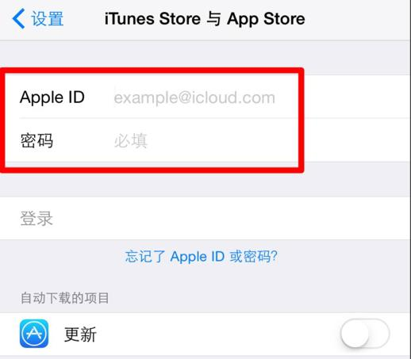
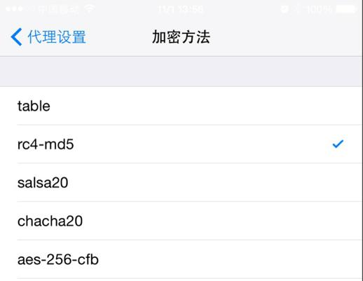

iPhone/iPad设置使用
ShadowSocks教程（更新中）

未越狱iPhone/iPad（iOS9.0.2及以下测试可用，iOS9.1等待更新）
步骤1：下载用于iOS的ShadowSocks软件
先注册美国iTunes账号，然后在iPhone/iPad上用美国iTunes账号登录，访问AppStore(未越狱版本)

步骤2：在App Store美国商店搜索ShadowSocks，下载安装，运行安装好的ShadowSocks App
步骤3：进入App后，点击右上角的数字1，再点击左上角的齿轮按钮，点击“服务器设置”
步骤4：在ShadowSocks设置界面中，选择“自定义”，填写服务器IP，端口和密码，然后选择加密方法和代理模式

步骤5：完成以上配置后，就可以在ShadowSocks App中自由地上网了。
没有越狱，又想使用Twitter和Facebook的App？有办法吗？请往下看！
越狱iPhone/iPad（iOS9.0.2及以下测试可用，iOS9.1等待更新）
Cydia Store(越狱版本)